Rocketdock/SteamyDock - Dock Settings Help

Fig 01. The two dock new settings utilities
shown side by side. The dock settings described here are shown on the
right hand side, the dock itself is below.
This utility controls the settings of the dock and where the user makes
configuration changes for the dock itself. The utility is a functional
reproduction of the original Rocketdock
dock settings screen with some enhancements. The look and feel of the
GUI is limited to emulating and enhancing what Rocketdock provided. The
idea is that this will make the utility quite familiar to Rocketdock
users. With a simple configuration change it can be used with either
Rocketdock or Steamydock, my
open source replacement for Rocketdock.
Note there is one fundamental difference, the original Rocketdock dock
settings made visual changes to the dock directly. This allowed you to
see
the result of your changes dynamically, this version does not yet
implement this. A rather slick effect, its negative side was
that some
of the slider controls that configured the size of the icons could be
rather slow to respond, especially on older and
less powerful machines. This new version is a standalone program that
has not been as deeply integrated into the dock and due to this
it cannot make dynamic alterations to the size of dock icons
on-the-fly. You can certainly see examples of how the resized icons
will look but it
will
only make the actual changes to the dock when the 'save and
restart' button is
operated. A positive side-effect is that the slider controls are
now far more
responsive.
At the moment the settings tool is a standalone tool but
may be integrated directly into Steamydock and perhaps then, that
dynamic modification functionality will be restored.
Startup
The dock settings tool is
initiated either by running the tool's binary directly, clicking on the desktop shortcut or when
initiated by the dock itself.
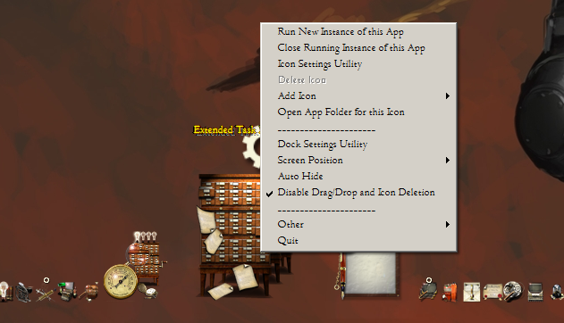
Fig 02. SteamyDock showing the right click menu - choose "Dock Settings"
When
using the dock, if you hover over an icon and select the right-click
menu, you will see "Dock Settings". Choosing that will open our dock settings utility.
Administrator Rights
This utility ought to run as administrator in order to
access Rocketdock's registry settings due to a recent Windows
feature
that prevents normal processes from accessing another tool's registry
settings. If you run it without admin rights then due to a Windows bug
some of the values may be incorrect and therefore the dock may look and
act rather strange due to corruption of configuration data only
partially saved. You have been
warned!
Run it as administrator and it will work as expected. Set this by
default by right clicking on the file and under the compatibility tab,
enable "Run this program as administrator". When Steamydock coding is
finished this requirement ought to go away but for the moment, to
access Rocketdock's data, admin access is required.
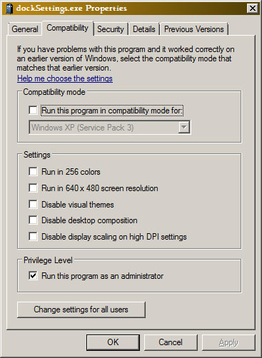
Fig 03. The administrator compatibility utility setting the SteamyDock privilege level.
In addition to this, the dock itself does things that are fairly
basic and fundamental. It does the sort of things that the Windows dock
itself does. Stopping and starting applications, checking whether the
processes it has initialised are running, these actions require admin
access. When the program is complete and released it will be bundled
with a manifest that will specify the admin requirement and it should
then install with admin rights without user intervention.
If you don't like running with administrator rights then my advice
is, remove this tool now. To allay any of your fears the code is
available on github and you can view it, download it and compile it yourself at any
time.
General Pane
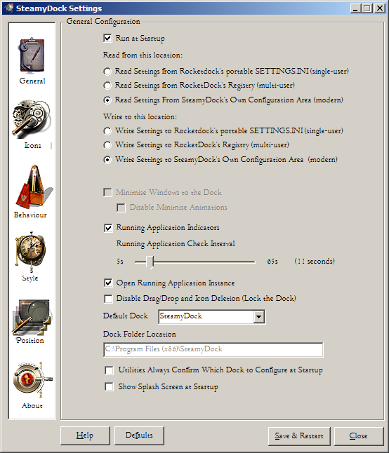
Fig 04. The General Pane where the main options for configuration are located.
Use this panel to configure the general
options that apply to the whole dock program. Note: If you hover your
mouse cursor on the various
components that comprise the utility a tooltip will appear that will
give more information on each item. There is a help option on the right
click menu that will provide further detail at any time, this document in fact.
Run at startup
Causes the currently selected dock to initiate at system startup.
Read Locations

Fig 05. The Read Locations
When you are migrating from Rocketdock you will need to
configure these options, otherwise they will not generally be needed.
The top two options will only be avaialable if Rocketdock is installed.
If is not installed then the associated options will be
greyed out.
Read from a portable Settings.ini
This triggers the reading of the dock configuration
data from the registry to the portable settings.ini that will be
dropped into Rocketdock's default folder in program files (x86).
Storing data in a settings.ini file located in the program files folder
is now considered an obsolete method for storing application data and
was superceded by use of the registry.
Read Settings from Rocketdock's Registry
This causes Rocketdock to read all its settings from the Windows
registry. It is now considered an obsolete approach for storing
application data and was superceded by the use of a .ini file located
in the user data area within "application data", this means that multiple
users can
access the same dock configuration but it can
cause Rocketdock
some serious saving problems under Windows 10 due to increasing
registry security.
Read Settings from SteamyDock's configuration.
If
the
default dock is Steamydock there will be an enabled option to read
the dock data from the user data area. This is not available
to Rocketdock users. Our suggestion is that you migrate to
SteamyDock as
soon as you can, making this the default option.
Write Locations
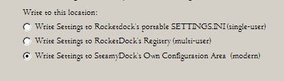
Fig 06. The Write Locations
When you are migrating from Rocketdock you will need to
configure these
options, otherwise they will not generally be needed. The top two
options will only be available if Rocketdock is installed.
If is not installed then the associated options will be greyed
out.
Write to a portable Settings.ini
This triggers the saving of the dock configuration
data from the registry to the portable settings.ini that will be
dropped into Rocketdock's default folder in
program files (x86).
Storing data in a settings.ini file in the program files folder
is now considered an obsolete tactic for storing application data and
was superceded by the registry but can be useful to help you
transfer Rocketdock data to other PCs.
Write to Rocketdock's Registry
This causes Rocketdock to store all its settings in the Windows
registry but is now considered an obsolete approach for storing
application data and was superceded by the user data area in appdata, this means that multiple users can
access the same configuration but it can cause Rocketdock
some problems under Windows 10 due to its increased security.
Write to SteamyDock's configuration.
If
the
default dock is Steamydock there will be an enabled option to
store
the dock data in the user data area. Our suggestion is that you migrate to SteamyDock as
soon as you can and make this the default option.
Also, see section toward the end on *1 Migration from RocketDock to SteamyDock.
Minimise windows to the dock
Use this option to cause
minimised windows to appear as large thumbnails in the dock. This
option functions in conjunction with but in our experience is best left
disabled. This functionality has not been implemented in SteamyDock.
Running Application Indicators
This option provides a tick to any icon that is related to a
currently running application. In SteamyDock this causes small white
cogs to be superimposed on the icon, on you only see tiny
black triangles as per the original os/x dock on Macs. This
functionality does add a very small cpu overhead as and Steamydock need to regularly keep track of running
processes. Using Steamydock you have some control of the frequency of
the timer that checks for running processes, you can set the timer
interval as you require.
 Fig 07. Configuration of the
Running Application Indicators and the process checking interval slider.
Fig 07. Configuration of the
Running Application Indicators and the process checking interval slider.
 Fig 08. The
Running Application Indicators as shown in SteamyDock appearing above any icons with running applications.
Open Running Application Instance
Fig 08. The
Running Application Indicators as shown in SteamyDock appearing above any icons with running applications.
Open Running Application Instance
If you click on an icon that is
already running then you can choose whether the dock can open it or
fire up another instance. This is only operative for Rocketdock.
This is disabled for SteamyDock but instead you have an extra option on
the right click menu to open a new instance of the program as shown in the image below.
Fig 09. SteamyDock showing disabling of the drag and drop option.
Disable Drag and Drop and Deletion of Icons
On
the older Rocketdock screen this was known as "Lock Items" - This is
an essential option that stops you accidentally deleting your dock
icons, if running Rocketdock ensure it is always enabled as it is easy
to delete an icon by mistake! Steamydock will make it more difficult to
accidentally delete an icon by asking you first.
Default Dock
Choose
which dock you are using Rocketdock or SteamyDock. Certain
configuration options will be disabled when SteamyDock is selected.
Dock Folder Location
This is the extrapolated location of the default dock program.
Language Translation
One item you may notice that is missing from SteamyDock, is the language drop-down. This
new FOSS version of the program is not language-aware, unlike the
original. The reason for this is two-fold. First of all, the complexity
of the code to support the translation of every string of text in the
whole program is considerable but I am still trying to
find time just to code and debug the dock itself. In addition, to achieve
the same I would have
to translate every bit of text into all the potential multiple
languages that using Rocketdock also supported (forty-nine of them). The trouble with this
is that I
can't use
the original translations considering that work was done
solely by Punklabs and is therefore proprietary. As SteamyDock is FOSS
I have avoided taking
any resource whatsoever from Punklabs so that I can always say this
tool is
truly
open source. Even so, I could use not use Rocketdock's translations as most
of them would not match the new texts I have in place, in addition I have
included a lot
more extra functionality in the form of tooltips, new buttons, help
&c - so a lot more would
have to be translated. Due to all this extra work, translation is a luxury
that I simply do not have time to implement.
These days most
computer-literate people understand English, at least that's my hope. I
hope you will forgive this one single omission. As this tool is open
source you could always add your favoured language translation functionality yourself.
Utilities Always Confirm Which Dock at Startup
This is to ensure you are configuring and using the correct dock during migration.
Show Splash Screen at Startup
The dock will pop up this splash screen every time it starts which is fun but after a while it may begin to annoy!

Fig 10. The splash screen for SteamyDock
Icons Pane

Fig 11. The Icon Panel
Use this panel to configure the icon settings that apply only to the icons themselves.
Quality
Lower power machines will benefit from the lower quality setting. On modern machines this setting has little benefit.
Opacity
The icons in the dock can be made transparent/opaque here to the user's desire.
Zoom Opaque
Should the zoomed icons be opaque when the others are transparent? Not yet implemented in Steamydock.
Hover Effect
The zoom effect to apply. Bubble is best! The alternatives not yet implemented in Steamydock.
Icon Size
The size of all the icons in the dock prior to any zoom effect being applied.
Zoom Size
The maximum icon size after a zoom.
Zoom Width
How many icons to
the left and right are also animated. Lower power machines will benefit
from a lower setting. 4 is fine.
Duration
How long the effect is applied in milliseconds.
Behaviour Pane

Fig 12. The Behaviour Pane
This is used to configure the dock
settings that determine how the dock will respond to user interaction.
Icon Attention Effect
Set which type of animation you want to occur
on an icon mouseover, Ubericon or Bounce, bounce is the default. The
Ubericon effects are supplied using another Punklabs product
called Ubericon and when using using Rocketdock that had to be installed and run separately.
If using Rocketdock and Ubericon are both installed then this configuration
option will 'take' and the Ubericon effects will operate but do note,
the new FOSS using Rocketdock replacement, SteamyDock will NOT support the
Ubericon effects. The bounce will have to do!
AutoHide
You
can determine whether the dock will auto-hide or not and the type of
hide that is implemented. using Rocketdock only supports one type of hide and
that is the slide type. Steamydock gives you an additional fade or an
instant disappear. The latter is lighter on CPU usage whilst the former
two are animated and require a little cpu during the transition.
AutoHide Duration
The speed at which the dock auto-hide animation will occur.
AutoReveal Duration
The speed at which the dock auto-reveal animation will occur. This
was previously called the "Pop-up Delay" in 's settings
screen.
AutoHide Delay
Determine the delay between the last usage of the dock and when it will auto-hide.
Continuous Hide
Determine the amount of time the dock will disappear when told to "go away" using F11 key.
Dock Hiding Key
This is the user defined key that causes the dock to disappear
immediately, by default for SteamyDock it is defined as F11. At the
moment only the function keys F1- F12 can be specified here. Later on
when SteamyDock is complete I will add the code to allow hot key
combinations. When Rocketdock is the default dock then the hotkey
combination is Control+Alt+R and that cannot be changed.
Animation Interval
The
overall animation period in millisecs. 10ms is a good default but
experiment with the value for your own system if the animation is not
as smooth as you desire. The animation is achieved using GDI+ and is
entirely CPU driven. You may see a benefit in Steamydock by changing this slider. This will have no effect on Rocketdock.
Style Pane
 Fig 13. The Style Themes and Fonts Panel
Fig 13. The Style Themes and Fonts Panel
This is used to configure the label and font settings.
Theme
Rocketdock comes
with a
number of default themes that change
the look of the dock, you can select which you desire using the
drop-down. Steamydock has the same functionality. Rocketdock and
Steamydock's themes are named the same and they may look similar but
the themes themselves are different. Steamydock does not
support Rocketdock's own themes as they are the property of
Punklabs. Their
implementation of their themes was also a little weird as they
comprised
a single image that was cleverly stretched and manipulated using GDI+
to fill the
dock. Steamydock doesn't do that. It has a simple, left, right and
centre images, only the centre image is ever stretched to fit. This
means that Rocketdock themes are incompatible and cannot be used
by
Steamydock but it also means that Steamydock's themes are easier to
create. I have created 24 themes with a similar look and feel to those
in Rocketdock and they
are named the same for the sake of familiarity.
 Fig 14. The style panel showing theme selection.
Fig 14. The style panel showing theme selection.
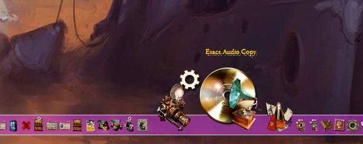
Fig 15.
The new 'ZakToon' skin on Steamydock.
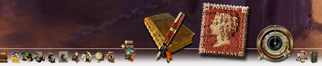
Fig 16. This is the crystalXP theme replacement displayed using SteamyDock.
 Fig 17. A sample of the Astro themes.
Opacity
Fig 17. A sample of the Astro themes.
Opacity
This controls the transparency of the background theme.
Theme Size
This controls the size of the background theme. Only implemented on SteamyDock.
Disable Icon Labels
The labels can be disabled entirely.
Enable Label Backgrounds
The label can have a solid background. Not implemented in Steamydock.
Select Font
This button gives the font selection box. Here you set the font as shown on the icon labels.
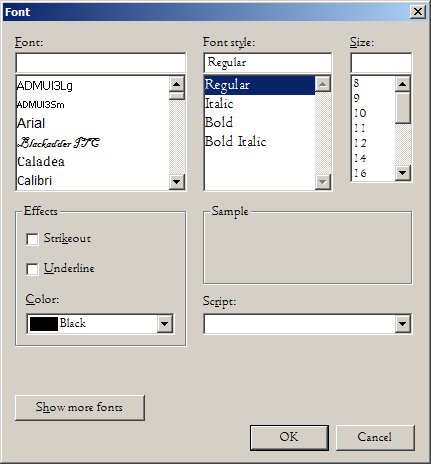
Fig 18. The Font Window.
When you have chosen your font
characteristics the preview box should show the font as it will be
displayed in the dock itself.
Shadow Colour
Pressing this button will provide the Windows
standard colour picker from which you can select the shadow colour.
Outline Colour
Pressing this button will provide the Windows
standard colour picker from which you can select the Outline
colour.
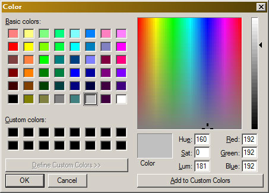
Fig 19. The Colour Section Window.
Font Opacity
This slider controls the transparency of the font itself. Only implemented on SteamyDock.
Shadow Opacity
This slider controls the transparency of the font shadow.
Outline Opacity
This slider controls the transparency of the font outline.
Note: I use Centurion Light SF font at 8pt for my own dock, it is a
freely downloadable font for Windows and you can install it yourself at
any time. You can get it here:
https://fontsgeek.com/fonts/Centurion-Light-SF-Regular
Position Pane

Fig 20. The Position Pane.
This pane is used to control the location of the dock.
Monitor
Select the monitor
upon which you want to display. Multi-monitor functionality
is only currently available using Rocketdock.
Screen Position
You can place the dock on the side of the screen
that you require. Steamydock only supports top and bottom. The best location for the dock is the bottom of the
screen but you will need to move the Windows task bar to the top of
the window. The utility cannot do that automatically as Windows does
not like apps that move the task bar...you'll need to do this
yourself.
Layering
Should the dock be
layered on top of or under other windows? You choose your preference.
Unlike Rocketdock, when using Steamydock, the dock will always come to
front during user interaction regardless of the layer position. The
dock will return to the default position once user-interaction has been
completed/
Centre
The whole dock can be moved right or left in a granular fashion to place it on the screen as you require.
Edge Offset
The whole dock can be moved away from the edge of the screen as you require.
About Pane
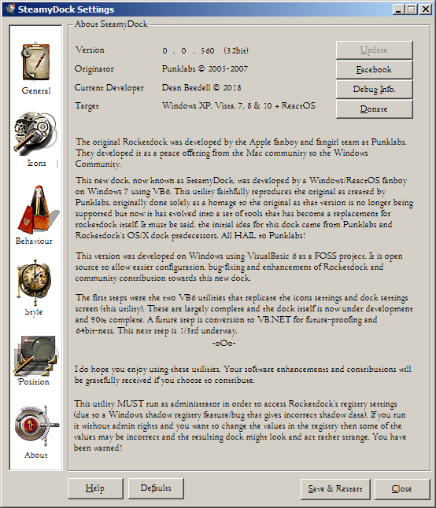
Fig 21. The About Pane.
The About Panel provides the version number of this utility, useful
information when reporting a bug. The text below this gives due credit
to Punk labs for being the originator of and gives
thanks to them for coming up with such a useful tool and also to Apple
who created the original idea for this whole genre
of docks. This pane also gives access to some useful utilities
listed below:
Update
This button will take
you to the GITHUB location where you can download a newer version of
this tool. Currently disabled until I implement regular updates.
Facebook
This button will take you to a Facebook location where this and my other creations can be discussed...
Debug Info
This is the same as selecting the debugging option from
the right click menu - Don't use it unless you know what you are doing.
Donate
This will open a browser window and take you to my donation page at Amazon.
Saving, Closing and Defaults
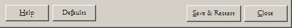
Fig 22. The main configuration buttons.
Save & Restart
None of
your changes will yet appear in Rocketdock nor SteamyDock itself
until you
press
the Save & Restart button. The reason for this is
that Rocketdock does
not
read its settings except on startup. A press on this button causes
the following operations to be carried out. The dock is closed, your
changes are then written to an intermediate settings file
then written to Rocketdock using either the registry or
the settings.ini
file, then Rocketdock is automatically restarted.using your
updated
configuration. The
restart is very quick and allows your changes to affect the dock
straight away. This method of operation has been carried over to
Steamydock, so you'll need to do the same when using SteamyDock.
Eventually the settings utility will be incorporated into the dock and
so a dock restart may not be required every time - but for the moment
that is just the way it is.
Defaults
By pressing the
button, the utility will restore the chosen
dock to a set of useful defaults. Not the same as the Rocketdock originals
but those which I have found to be quite useful as defaults.
Close
This will close just the settings utility and not the dock itself.
Menus & Other Options
A right click here and there will bring up menu options. Most of
these are self-explanatory. The important options are the help,
licence and debugging options.
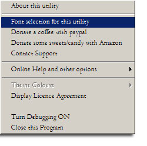
Fig 23. The Font Window.
The About Screen.
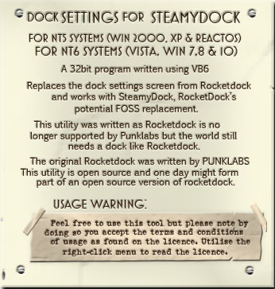
Fig 24. The About Window.
Font Selection
Font Selection from the main right-click menu. What is this for? Well,
these days it is harder than before to customise an app than it
previously was. Microsoft require all the apps on Windows to look the
same, to comply with the so-called 'modern' flat style, one that to my mind, is
looking increasingly out of date already. The system font is becoming
increasingly difficult to alter and I prefer my apps to display a font
of my choice rather than one determined solely by Microsoft. So, you can use
the default font for this app or you can choose one yourself that
will only affect the utility itself. My chosen font, Centurion Light SF
is shown throughout all the various screenshots you will see here.

Fig 25. The Font Window.
This changes the font used by the whole utility. At the current moment, only
the font name and size will be accepted, all other variations will
be ignored.
Themeing
This feature allows
you to retain the high contrast look and feel of a Windows Classic
theme. With Vista and Win 7 a much brighter window background colour
was introduced with all the alternative themes. This caused a general
wash-out of colours and made buttons and sliders more difficult to
differentiate from the white areas used for user input. The classic
theme has a darker background and provides the user with a higher
contrast experience. Unfortunately that classic theme was not provided
to Windows 10 users (even though it is actually still present, you just
can't use it). For this utility alone I have provided the option to
allow it to sport a high contrast look and feel. It restores the
classic Windows look but unfortunately the rest of your Windows
programs will still sport the washed out theme. I can't fix everything.
Debugging
The final option in the right click menu is to turn Debugging ON
This runs a separate
binary, the persistentDebug.exe (an additional binary provided with this tool)
is only run when you turn debugging ON. I suggest you do NOT use this
utility unless you have a problem that is not easy diagnose. It is
a separate exe that my program talks to, sending the program's
subroutine entry points and other debug data to that window.When
you run it the first time, your anti-malware tool such as malwarebytes
will flag it as a possible malware. It is NOT. It only seems that way to
anti-malware tools because of the way it operates, ie. one program is talking to another using
shared memory.
The code for the persistentDebug program was provided by Elroy on
the VBforums and you can have a look at the source any time. For the
moment, if you want it to run, bring it back from quarantine and add an
exclusion to your anti-malware tool!
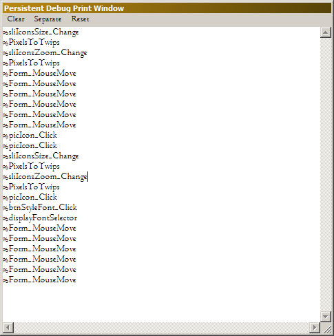
Fig 26. The Debug Window that is shown when you select debug mode.
The debug tool is a runtime debugger showing all the functions
and routines that have been called by the program. I have debugged as
many errors that I can but some errors only appear at runtime. If you
have an undiagnosed program problem use the debugger to send me a list
of the recent program entry points as listed in the debugger as well as
any error message that the program displays.
*1 Migration from RocketDock to SteamyDock
Most users can ignore this section - This section is only for users of that want to
migrate their Rocketdock to SteamyDock.
When that time comes all you
need to do is:
- Right Click and select "Dock Settings"
- When the dock settings utility appears, select the General Pane.
- Where there is a drop down box stating, "Default dock" - select Rocketdock as the default dock.
- Select the location where the icon details are currently stored, that will be either the registry or the settings.ini
file according to how you have configured Rocketdock. Select that as the location to 'read' from.
- In the section below you will then set the 'write' location
to be
SteamyDock's own configuration area
- Click 'save and restart'.
RocketDock will restart.
- The final step is to set the 'read' location back to SteamyDock's
own configuration area
- Where there is a drop down box stating, "Default dock" - set the default dock to be SteamyDock.
- Press "save & restart" again. Steamydock should then
restart, displaying all the old icons from their original Rocketdock locations.
SteamyDock
will now be using its own user data area and any changes to SteamyDock will no longer
affect Rocketdock. If you choose to delete Rocketdock from your system, ensure that
you retain any icons that you want to continue to use in SteamyDock, ie. do not delete or move them.
Licence

Fig 27. The Licence Window.
The licensing is rather important. Using this program implies
you have accepted the licence. The GPL licence applies to the code.
With regard to the resources and icons bundled with the program note
this: Do not forget that when you are using my icons and resources for
commercial projects you need to obtain my written consent and a
commercial use licence that allows you to do so. Otherwise, usage is
forbidden.
Technology:
The utility was created using VB6,
Microsoft's once vaunted flagship
language. It was built upon Windows 7, Microsoft's last good desktop
operating system, I used VB6 to prove it can be done and to reacquaint
myself
with the technology. The utility will be migrated to
VB.NET
so there will be a version that is future-proof and 64bit. This help
file
applies to either version as they will be functionally identical.
VB6 Version Credits:
-
Shuja Ali
(codeguru.com) for his settings.ini code.
-
Marco Bellinaso Colour dialog picker code without dependent OCX
-
KillApp code from an unknown, untraceable source, possibly on MSN.
-
Registry reading code from ALLAPI.COM.
-
Punklabs for the original inspiration and for Rocketdock, Skunkie in
particular.
-
Active VB Germany for information on the undocumented
PrivateExtractIcons API.
-
Elroy on VB forums for his Persistent debug window
- Si_the_geek for the code to detect operation within the IDE
-
Krool on the VBForums for his impressive common control replacements, only Krool's slider used here.
- Terry Kreft &
Stephen Lebans for code to call the Windows ChooseFont
dialog without dependent OCX
Built using: VB6, MZ-TOOLS 3.0, CodeHelp Core IDE Extender Framework
2.2 & Rubberduck 2.4.1 and Krool's replacement Controls.
Some credit goes to the chaps on the VB forum who answered my
incessant questions without giving up on me. Not in any particular
order: si_the_geek, jmcilhinney, .paul, elroy, krool,
schmidt, passel, Shaggy Hiker, Chris.E, LaVolpe and Fafalone to name
but a few who have responded or commented.
Finally, credit to Harry Whitfield, Emeritus Professor, University of
Newcastle upon Tyne, for helping me with ideas, testing and being a
sounding board for my ideas. I would have done none of this without him
as he is my programming Yoda and my inspiration to do better.
Links
Copyright ©2019 Dean Beedell
This program is free software; you can redistribute it and/or modify it
under the terms of the GNU General Public Licence as published by the
Free Software Foundation; either version 2 of the License, or (at your
option) any later version. This program is distributed in the hope that it will be useful, but
WITHOUT ANY WARRANTY; without even the implied warranty of
MERCHANTABILITY or FITNESS FOR A PARTICULAR PURPOSE. See the GNU
General Public License for more details. You should have received a copy of the GNU General Public License along
with this program; if not, write to the Free Software Foundation, Inc.,
51 Franklin St, Fifth Floor, Boston, MA 02110-1301 USA